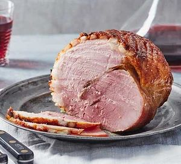

Glazed Gammon

Add a sticky honey and mustard glaze to gammon for a delicious sweetness that
contrasts with the saltiness of the meat. It's great for a celebration supper.
Ingredients
- 2½ kg boneless unsmoked gammon joint, tied
- 1 sprig thyme 2 bay leaves and 1 rosemary sprig tied together
- 1 onion, halved
- 2 carrots, roughly chopped
- 1 celery stick, roughly chopped
- 1 tbsp black peppercorns
- 1 tsp cloves
-
For the Glaze:
- 1½ tbsp English mustard
- 70g clear honey
- 2 tbsp soft dark brown sugar
Cooking Steps
-
Put the gammon in a large, deep saucepan.
Add the tied herbs, onion, carrots, celery, peppercorns and cloves.
Pour over enough cold water to cover the meat, then bring to the boil, cover with a lid, and lower to a gentle simmer for 1 hr 15 mins.
Turn off the heat and leave the ham to sit in the liquid for 30 mins
-
Remove from the liquid (this makes a delicious soup stock) and leave to cool until cold enough to handle.
Peel off the thick layer of skin on the gammon to reveal a layer of fat.
Discard the skin and score the fat in a criss-cross pattern with a sharp knife
-
Heat the oven to 200C/180C fan/gas 6. Put the ham in a roasting tray lined with foil.
Mix together the mustard, honey and sugar in a bowl, then generously brush half over the ham.
Roast for 15 mins, then brush with the remaining glaze.
Return to the oven for a further 20-30 mins or until sticky and brown. Leave to cool for 15 mins before carving into thick slices.
Recipe Source: BBC Good Food